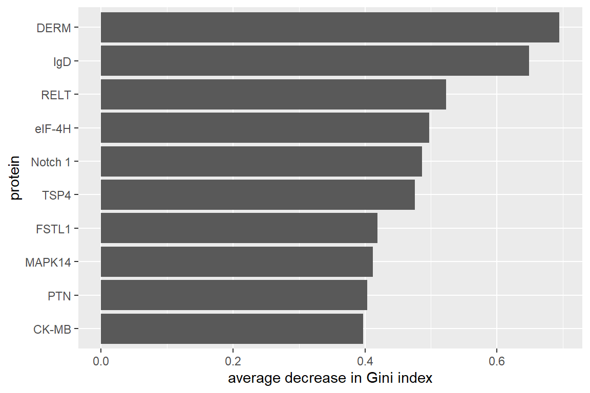
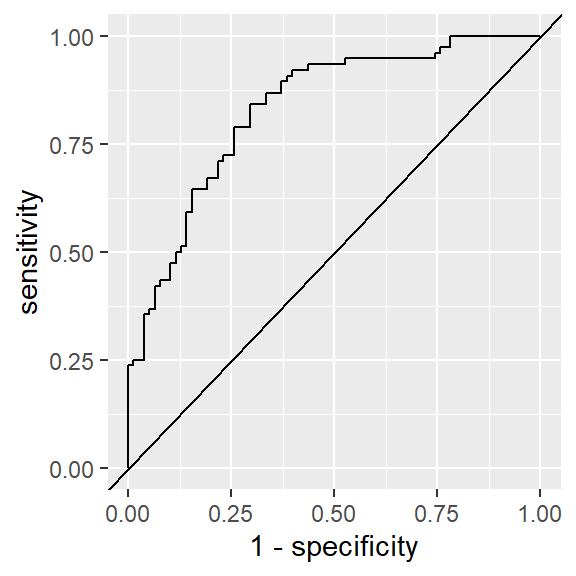

Classification with logistic regression
PSTAT197A/CMPSC190DD Fall 2022
Trevor Ruiz
UCSB
Announcements/reminders
Next assignment and groups posted on class website
- Due Friday, October 28, 11:59pm
Any feedback on the first group assignment?
Random forests, cont’d
From last time
In groups you made \(T = 7\) trees ‘by hand’. To make each tree:
randomly resample observations and choose two predictors at random
choose a variable and a split by manual inspection, then repeat
- this method of tree construction is called recursive partitioning
Then each of you classified a new observation. We took a majority vote to decide on the final classification.
This is a random forest consisting of \(T = 7\) trees.
Random forests
To implement random forests algorithmically, one can control:
number of trees \(T\)
number of predictors \(m\) to choose at random for each tree
bootstrap sample size and method
tree depth as specified by…
minimum number of observations per split (‘node size’)
maximum number of terminal nodes
Variable importance
Suppose we had a random forest of three trees.
- Which variables seem most important?
- How can you tell?
How to measure importance?
A natural thought is to measure importance by the use frequency of each variable.
But use frequency doesn’t capture the quality of splits. Imagine:
splitting often on education but with little improvement in classifications
and splitting infrequently on captial gain but with dramatic improvement
capital gain is probably more important for classification even though it’s used less
Quality of splits
When you were building trees, you had to choose which variable to split on.
How did you pick?
Did you have a principle or goal in mind?
What would make one split better than another?
Measuring quality: node homogeneity
One approach is to tree construction is to choose splits that optimize quantitative measures of node homogeneity. If \(p_k\) is the proportion of observations in class \(k\):
(Gini index) \(1 - \sum_{k = 1}^K p_k^2\)
(entropy) \(-\sum_{k = 1}^K p_k \log_2 p_k\)
Smaller values indicate greater homogeneity.
Variable importance scores
The change in node homogeneity can be calculated for every split:
\[ h(\text{before}) - \underbrace{\Big[(p_L \times h(\text{after}_L) - p_R \times h(\text{after}_R)\Big]}_{\text{weighted avg. of homogeneity in child nodes}} \]
The average change across all nodes associated with a given predictor in all trees gives an easy measure of importance.
- favors high-quality splits over splitting frequency
Proteomics application
Back to the proteomics data, the variable importance scores from a random forest provide another means of identifying proteins.
fit a random forest
compute importance scores
rank predictors and choose top \(n\)
Results
By default, randomForest():
uses \(\sqrt{p}\) predictors for each tree
trees grown until exact classification accuracy is achieved
bootstrap sample size equal to number of observations

Rows show true classes, columns show predicted classes.
| ASD | TD | class.error | |
|---|---|---|---|
| ASD | 49 | 27 | 0.3552632 |
| TD | 21 | 57 | 0.2692308 |
Recap
Putting things together
Let \(\hat{S}_j\) indicate the set of proteins selected by method \(j\) . Then the final estimate is
\[ \hat{S}^* = \bigcap_j \hat{S}_j \]
In other words, those proteins that are selected by all three methods. Remarks:
probably fairly high selection variance
probably pretty conservative
“Core” panel
tt_fn <- function(.df){
infer::t_test(.df,
formula = level ~ group,
alternative = 'two-sided',
order = c('ASD', 'TD'),
var.equal = F)
}
s1 <- read_csv('data/biomarker-clean.csv') %>%
mutate(across(.cols = -c(group, ados), log10)) %>%
mutate(across(.cols = -c(group, ados), ~ scale(.x)[, 1])) %>%
mutate(across(.cols = -c(group, ados), trim_fn)) %>%
select(-ados) %>%
pivot_longer(-group,
names_to = "protein",
values_to = "level") %>%
nest(data = c(group, level)) %>%
mutate(test = map(data, tt_fn)) %>%
unnest(test) %>%
arrange(p_value) %>%
mutate(m = n(),
hm = log(m) + 1/(2*m) - digamma(1),
rank = row_number(),
p.adj = m*hm*p_value/rank) %>%
slice_min(p.adj, n = 10) %>%
pull(protein)# reproducibility
set.seed(101422)
# fit rf
rf_out <- randomForest(x = asd_preds,
y = asd_resp,
ntree = 1000,
importance = T)
# select most important predictors
s2 <- rf_out$importance %>%
as_tibble() %>%
mutate(protein = rownames(rf_out$importance)) %>%
slice_max(MeanDecreaseGini, n = 10) %>%
pull(protein)Logistic regression
How accurate is the panel?
Goal: use a statistical model to evaluate classification accuracy using the ‘core’ panel of proteins \(\hat{S}^*\).
The logistic regression model is the most widely-used statistical model for binary data.
The Bernoulli distribution
The Bernoulli distribution describes the probability of a binary outcome (think coin toss). Mathematically:
\[ Y \sim \text{bernoulli}(p) \quad\Longleftrightarrow\quad P(Y = y) = p^y (1 - p)^{1 - y} \quad\text{for}\quad y \in \{0, 1\} \]
This just says that \(P(Y = 1) = p\) and \(P(Y = 0) = 1 - p\).
Properties:
\(\mathbb{E}Y = p\)
\(\text{var}Y = p(1 - p)\)
The logistic regression model
The logistic regression model for a response \(Y\in\{0, 1\}\) and covariates \(X\in\mathbb{R}^p\) is:
\[ \begin{cases} Y_i|X_i = x_i \stackrel{iid}{\sim} \text{bernoulli}(p_i) \quad\text{for}\quad i = 1, \dots, n\\ \log\left(\frac{p_i}{1 - p_i}\right) = \beta_0 + \beta_1 x_{i1} + \cdots + \beta_p x_{ip} \end{cases} \]
This is a generalized linear model because \(g\left(\mathbb{E}Y\right) = X\beta\) and \(Y\sim EF\).
Parameters are estimated by maximum likelihood.
The model, visually
\[ \log\left(\frac{p_i}{1 - p_i}\right) = x_i^T\beta \quad\Longleftrightarrow\quad p_i = \frac{1}{1 + e^{-x_i^T\beta}} \]
Plotting the right hand side for one predictor with \(\beta^T = [0 \; 1]\):

Assumptions
- Observations are independent
- Probability of event is monotonic in each predictor
- Mean-variance relationship following Bernoulli distribution
Parameter interpretation
According to the model, the log-odds are linear in the predictors:
\[ \log\underbrace{\left(\frac{p_i}{1 - p_i}\right)}_{\text{odds}} = \beta_0 + \beta_1 x_{i1} + \cdots + \beta_p x_{ip} \]
So a unit increase in the \(j\)th predictor \(x_{ij} \rightarrow x_{ij} + 1\) is associated with a change in log-odds of \(\beta_j\).
Therefore the same unit increase is associated with a change in the odds by a factor of \(e^\beta_j\).
Fitting with one predictor
Maximum likelihood: find the parameter values for which the joint probability of the data is greatest according to the model.
Written as an optimization problem in terms of the negative log-likelihood:
\[ \hat{\beta} = \arg\min_\beta \left\{ -\ell(\beta; x, y) \right\} \]
Computed by iteratively re-weighted least squares (IRLS).
asd_sub <- asd_clean %>%
select(group, any_of(s_star)) %>%
mutate(group = (group == 'ASD'))
fit <- glm(group ~ DERM, family = 'binomial', data = asd_sub)
fit %>% broom::tidy() %>% knitr::kable()| term | estimate | std.error | statistic | p.value |
|---|---|---|---|---|
| (Intercept) | -0.016712 | 0.1804471 | -0.0926145 | 0.9262099 |
| DERM | -1.116996 | 0.2239268 | -4.9882173 | 0.0000006 |

Fitting with several predictors
The fitting procedure is identical.
| term | estimate | std.error | statistic | p.value |
|---|---|---|---|---|
| (Intercept) | -0.0933124 | 0.1993486 | -0.4680863 | 0.6397229 |
| DERM | -0.6033605 | 0.2798359 | -2.1561227 | 0.0310741 |
| RELT | -0.4376278 | 0.2859314 | -1.5305345 | 0.1258845 |
| IgD | -0.6616877 | 0.2129419 | -3.1073631 | 0.0018876 |
| PTN | -0.2339665 | 0.2731089 | -0.8566785 | 0.3916226 |
| FSTL1 | -0.3600695 | 0.2592400 | -1.3889426 | 0.1648502 |
Measuring accuracy
There are two types of errors:
| Predicted 0 | Predicted 1 | |
|---|---|---|
| Class 0 | true negative (TN) | false positive (FP) |
| Class 1 | false negative (FN) | true positive (TP) |
Accuracy rates
The most basic accuracy rates are:
Sensitivity/recall: \(\frac{TP}{P}\) , proportion of positives that are correctly classified
Specificity: \(\frac{TN}{N}\) , proportion of negatives that are correctly classified
Accuracy: proportion of observations that are correctly classified
Your turn
Try calculating sensitivity, specificity, and accuracy for the logistic regression using the core proteins selected.
TD ASD
TD 58 20 78
ASD 20 56 76
78 76 154Using yardstick::metric_set()
library(yardstick)
class_metrics <- metric_set(sensitivity, specificity, accuracy)
asd_sub %>%
modelr::add_predictions(fit, type = 'response') %>%
class_metrics(estimate = factor(pred > 0.5),
truth = factor(group),
event_level = 'second') %>%
knitr::kable()| .metric | .estimator | .estimate |
|---|---|---|
| sensitivity | binary | 0.7368421 |
| specificity | binary | 0.7435897 |
| accuracy | binary | 0.7402597 |
ROC analysis
The error rates you just calculated are based on classifying a subject as ASD whenever \(\hat{p}_i > 0.5\).
if we wanted a more sensitive classifier, could use \(\hat{p}_i > 0.4\);
for a more specific classifier, use \(\hat{p}_i > 0.6\).
A receiver operating characteristic (ROC) curve shows this tradeoff between sensitivity and specificity.

Other accuracy metrics
Some other metrics that are useful to know:
precision \(\frac{TP}{TP + FP}\), proportion of estimated positives that are correct
false discovery rate \(\frac{FP}{TP + FP}\), proportion of estimated positives that are incorrect
F1 score \(\frac{2TP}{2TP + FP + FN}\), harmonic mean of precision and recall
AUROC area under ROC curve
Next time
variable selection via regularized estimation
design assessment of Hewitson analysis
- mini assignment: sketch a diagram representing the data analysis in the paper; come prepared to share